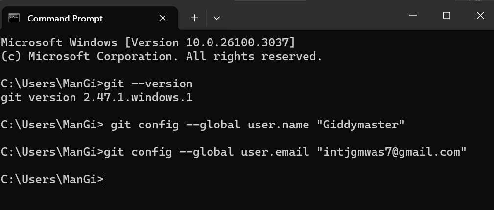
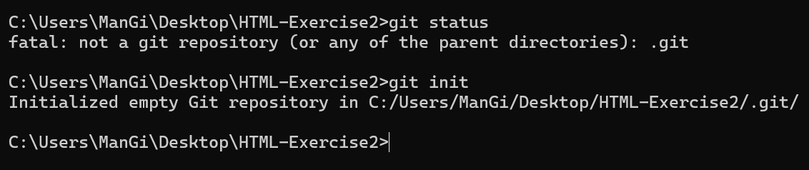

Git is a version control system that allows you to manage and keep track of your source code history. It is a distributed version control system, which means that the entire codebase and its history are available on every developer's computer, which allows for easy branching and merging.A Version Control System (VCS) is a tool that helps developers track changes in their code over time. It enables them to:
Before you start using Git, you have to set up a development environment. You need to install Git on your computer and configure it with your name and email address. You can do this by:
First download Git from Download Git
Open cmd/terminal and type git --version command to confirm git is successfully installed in your machine
Create a new folder and open it in terminal to run the following commands to set your name and email address:
git config --global user.name "Your Name"
git config --global user.email "
as shown below:

Now you are ready to start using Git.
To create a new Git repository, you need to open the terminal, navigate to your project directory, and run the following command:
git status to check the status of your repository
git init to initialize a new Git repository
This command will create a new Git repository in your project directory. You can then start tracking your project files using Git.
After creating a new Git repository, you need to add your project files to the staging area. The staging area is a place where you can group files together before committing them to the repository. This allows you to organize and review changes before they become part of the project history. To add files to the staging area, use the command git add filename for a specific file or git add . to add all files.
Tracked files are files that Git is aware of and is tracking for changes, while untracked files are files that Git is not yet tracking. You can see the status of your files by using the git status command, which will show you which files are tracked, untracked, or staged for commit.